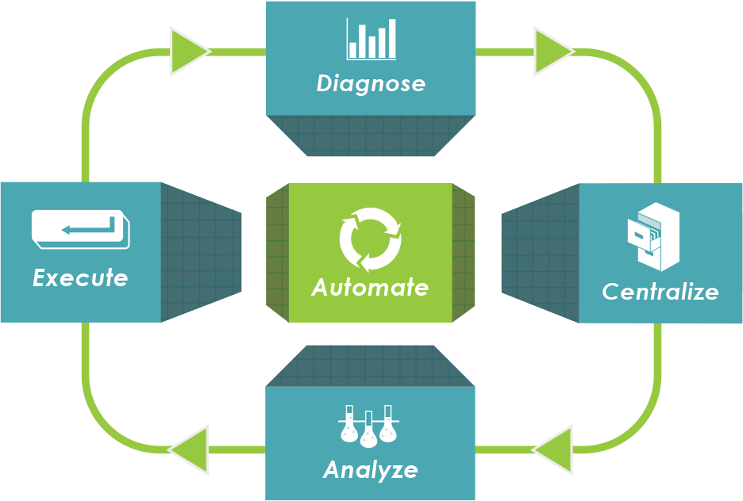
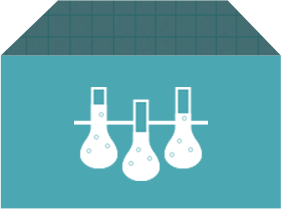

A mobile CRM for a mobile world
Wylei helps you develop a
comprehensive mobile
engagement strategy
no matter where you are today.
comprehensive mobile
engagement strategy
no matter where you are today.

Diagnose
Identify & measure
your crucial metrics
Identify & measure
your crucial metrics
WYLEI helps you define the Key metrics for your mobile
user experience and gives you the capability to track them over time.
- Conduct mobile behavioral research.
- Learn the intent behind each mobile touch.
- Develop the right mobile metrics for your business.

Centralize
Hold all your
customer data in
our cloud
Hold all your
customer data in
our cloud
Whether customer data already
exists in piecemeal across your enterprise, or whether you're starting from scratch, WYLEI
bring it all together so you can understand your mobile customers, now.
- Track your customer's mobile behavior.
- Link mobile usage to other customer datasets.
- Get up and running in one day.

Analyze
Glean actionable
insights from
your data
Glean actionable
insights from
your data
WYLEI can help you understand
what your mobile experience data is telling you and provide specific recommendations for
engaging and monetizing more personally.
- Learn the true net impact of any mobile customer initiative.
- Understand which customers respond best to which offers.
- Define a comprehensive mobile engagement plan for each user.

Execute
Interact with your
customers on their
mobile devices
Interact with your
customers on their
mobile devices
However you want to engage
your mobile user, WYLEI leverages appMobi's best-in-class cross-platform cloud services to eliminate
friction.Whether you need to contact your customer, ask them a question, accept a payment, or practically
anything else, WYLEI has the heavy lifting covered.
- Send a push message to any device on any platform.
- Ask a question.
- Sugget a feedback post / tweet / tumblr post.
- Give a reward.
- Offer a frictionless, one-touch purchase.

Automate
All of the above -
automatically.
All of the above -
automatically.
WYLEI employs advanced
machine learning techniques to turn the mobile engagement process into continuous improvment.The
end result is an autonomous mobile CRM with more engaged customers.
- Autonomously run A/B tests.
- Harvest value from day one automatically engage.
- Each user with a personalized strategy.
- Manage it all from your mobile device.